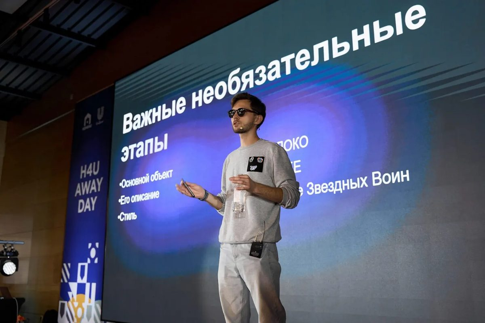
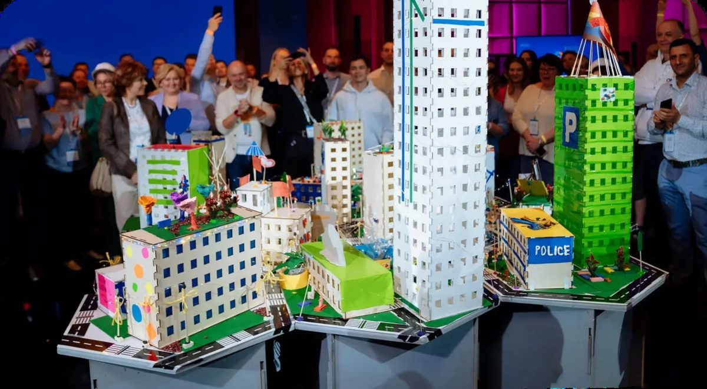
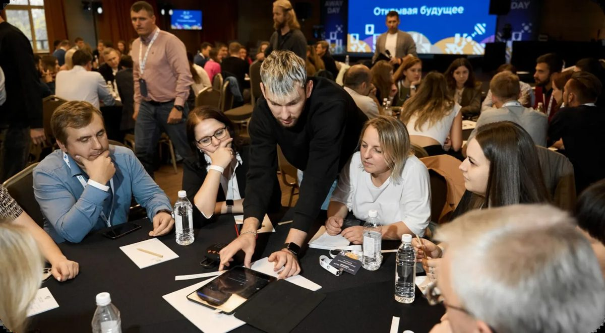
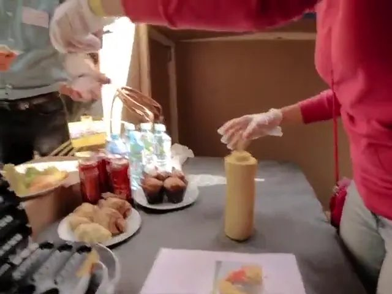

ПРЕВЬЮ, НЕ ОПУБЛИКОВАНО. Тексты для блога Каталиста на Sostav, ждут ОК Маши
Пост 1 · рубрика «Event-маркетинг» · публикация: день 1 после ОК · 3952 знаков с пробелами · ссылок на сайт: 4
Тренды ивент-индустрии 2026: что компании заказывают на тимбилдинг и корпоратив
Мария Варламова, генеральный директор ивент-агентства «Каталист»
Я руковожу «Каталистом» с 2010 года, за это время мы провели больше 5 000 проектов. Здесь нет прогнозов и опросов. Только пять форматов из наших последних проектов: клиент, число людей и что получил заказчик. По ним видно, куда сдвинулся спрос.

Бизнес-игра «Стартап с нейросетями»: лекция эксперта перед командной частью. Фото: Каталист
1. Нейросети внутри программы, а не на слайде
Компании хотят, чтобы сотрудники попробовали нейросети руками. Лекции про ИИ для этого мало: через неделю её никто не помнит. Поэтому мы встроили нейросети в игру.
Пример: бизнес-игра «Стартап с нейросетями». Она идёт 2,5 часа, группа от 50 до 300 человек. Первые 30 минут эксперт показывает, как работают нейросети. Дальше команды сами создают бренд: логотип, рекламу и стратегию продвижения в ChatGPT, Midjourney и других сервисах. В финале каждая команда за 3 минуты защищает стартап перед инвесторами.
Для туроператора «Пегас» мы провели эту игру в Турции на 1 200 участников. В 2025 году программа победила в премии BEMA как лучший командообразующий проект с ИИ. Сейчас в нашем каталоге отдельный раздел программ с нейросетями: «Музыкальный лейбл», «Нейрокалендарь», «Нейро-Кино», «Нейрогалерея».
Что проверить заказчику: сколько минут участник работает в нейросети сам, а сколько смотрит на экран. Если сам почти не работает, это шоу, а не навык.
2. Тимбилдинг как рабочая сессия
Второй сдвиг: тимбилдинг соединяют с работой. Команда PepsiCo на стратегической сессии с нашими ведущими придумала с помощью нейросетей концепцию нового продукта. То есть игровой формат дал рабочий результат, который компания забрала с собой.
Похожая логика у ВкусВилл. Топ-менеджеры компании на тимбилдинге сами собирали сумки для курьеров. Задача была не развлечь руководство, а дать ему пройти путь сотрудника.
Тимбилдинг для ВкусВилл. Фото: Каталист
3. Одна общая вещь на всех участников
Большие компании просят формат, где сотни людей делают один общий объект. Каждая команда отвечает за свою часть, а в финале части должны сойтись. Так отделы видят, что их работа стыкуется с чужой.
«Корпоративная картина» для МегаФона: 1 800 участников. Каждая команда пишет свой фрагмент, в финале из фрагментов складывается одна картина, и она остаётся в офисе.
Та же программа для «Абрау-Дюрсо»: 200 человек, 40 команд, картина из 40 фрагментов.
«Мегаполис» для ВкусВилл: 130 человек строят город из 16 районов. Для RuStore мы строили город, где в каждом районе есть отделение RuStore.
«WOW Башня», новинка 2026 года: команды собирают арт-объект высотой 10 метров. На одном из проектов башню размером с трёхэтажный дом собрали 160 участников.

«Мегаполис» для RuStore: город, где в каждом районе есть отделение RuStore. Фото: Каталист
4. Игра под задачу компании, а не из каталога
В каталоге «Каталиста» больше 50 программ, но крупные клиенты всё чаще просят собрать игру под себя. Райффайзенбанк поставил задачу так: разработать новую игру-тимбилдинг специально под задачи компании. Так появился «Фестиваль Фудтраков»: каждая команда придумывает свой фудтрак, бренд и стратегию продвижения, а участники покупают еду у других фургончиков за игровую валюту. Проект получил премию «Событие года», а вторая часть фестиваля прошла уже на 300 участников.
5. Программа на год вместо одного дня
Один яркий день не меняет работу команды. Поэтому в 2026 году мы запустили «Годовое развитие команды 360»: тимбилдинги, обучение и стратегические сессии по одному плану на год, плюс клубы каждый месяц. Это ответ на вопрос, который заказчики задают после удачного тимбилдинга: «А что дальше?»
Шпаргалка: что спросить у агентства в 2026 году
Какую задачу компании решает программа? Если ответ «сплотить коллектив», попросите пример клиента с похожей задачей.
Что участники делают своими руками и сколько минут?
Что останется у компании после события: объект, идеи, видео, план?
Можно ли адаптировать игру под ваши процессы, продукт или ценности?
Ориентиры по бюджету у нас такие: тимбилдинг от 249 000 ₽ за программу, корпоратив под ключ от 1 000 000 ₽, группы от 50 до 3 000 человек. Все проекты из этого текста с фото собраны на странице кейсов.
Пост 2 · рубрика «Event-маркетинг» · публикация: день 2 после ОК (не раньше чем через 24 часа после первого) · 4128 знаков с пробелами · ссылок на сайт: 4
Тимбилдинг, который работает на цели компании: как бизнес-игры меряют результат
Ирек Мансуров, исполнительный директор ивент-агентства «Каталист»
В бизнес-игре всегда есть счёт: игровые деньги, оценки инвесторов, долетел ли экипаж. Этот счёт легко принять за результат тимбилдинга. Но это разные вещи. Рассказываю, что игра измеряет сама, что должна измерить компания и как связать одно с другим.

Стратегическая сессия PepsiCo: команды придумывают концепцию продукта с помощью нейросетей. Фото: Каталист
Сначала цель, потом игра
Я отвечаю в «Каталисте» за производство программ. Мы проводим бизнес-игры 2-3 часа для групп от 50 до 500 человек. Первый вопрос, который я задаю заказчику: что должно измениться в работе после игры? Ответ определяет программу. Вот как цели ложатся на игры из нашего каталога:
Цель компании
Игра
Что видно в игре
Отделы договариваются между собой
«Мегаполис», 2,5-3 часа, 50-500 человек
Команды строят районы одного города, в нём бывает больше 100 объектов. Районы надо согласовать между собой. В финале город подключают к электросети и зажигают фонари
Команды придумывают фудтрак, бренд и стратегию продвижения. Участники получают игровые деньги и покупают еду у других фургончиков: видно, чей продукт купили
Команды создают бренд в нейросетях и за 3 минуты защищают его перед инвесторами. Лучшие стартапы получают инвестиции

«Фестиваль Фудтраков» для Райффайзенбанка: участники обменивают игровую валюту на фестивале. Фото: Каталист
Что игра измеряет сама
Счёт игры отвечает на вопрос «как команда сработала сегодня». Сколько игровых денег заработал фудтрак. Какой стартап получил инвестиции. Какой экипаж довёл рейс без столкновений. Это честная обратная связь: команда видит её сразу, в финале.
Ещё игра показывает людей. В «Экипаже» и «Мегаполисе» кто-то сам берёт роль капитана, кто-то договаривается с соседними командами, кто-то держит расчёты. Попросите руководителя или HR провести игру наблюдателем, а не участником, и записать это. Для компании это готовый список людей, которых стоит проверить в новых ролях.
Что должна измерить компания
Агентство отвечает за игру. Результат в работе компания измеряет сама: только у неё есть данные о работе. Я советую заказчикам три шага:
Одна цель одним предложением. Например: «отделы продаж и логистики перестали перекидывать друг другу заявки». Три цели в одной игре размывают все три.
Показатель, который компания уже считает. Сроки согласований, число возвратов заявок между отделами, число предложений в банке идей. Новый показатель под тимбилдинг заводить не нужно: не с чем будет сравнить.
Одинаковые отрезки до и после. Квартал до игры и квартал после. Сравнивать неделю после игры с годом до неё бессмысленно.
Пример, где результат виден сразу: стратегическая сессия PepsiCo. Команды в игровом формате и с нейросетями придумали концепцию нового продукта, и компания забрала её в работу. Другой путь выбрал Райффайзенбанк: попросил разработать игру специально под задачи компании, а не взять готовую из каталога.
«Стартап с нейросетями»: работа команд выводится на большой экран. Фото: Каталист
Когда бизнес-игра не поможет
Игра тренирует договорённости, роли и решения. Она не исправит проблему, если причина в другом: в зарплатах, в перегрузке, в неясных регламентах. Если люди не договариваются потому, что у отделов противоречащие планы, после игры они вернутся к тем же планам. В таком случае я честно говорю заказчику, что сначала нужен разговор руководителей, а тимбилдинг потом.
Ещё одно ограничение: разовая игра даёт толчок, но не привычку. Для целей на год у нас есть «Годовое развитие команды 360»: тимбилдинги, обучение и стратегические сессии по одному плану, клубы каждый месяц.
Шпаргалка перед заказом
Запишите одну цель одним предложением.
Выберите показатель, который компания уже считает, и снимите его до игры.
Подберите игру под цель, а не под сезон.
Посадите на игру наблюдателя от HR или руководства.
Сравните показатель на том же отрезке после игры.
Бизнес-игры у нас стоят от 249 000 ₽ за программу. Описание каждой игры с длительностью и размером группы есть на её странице в каталоге.